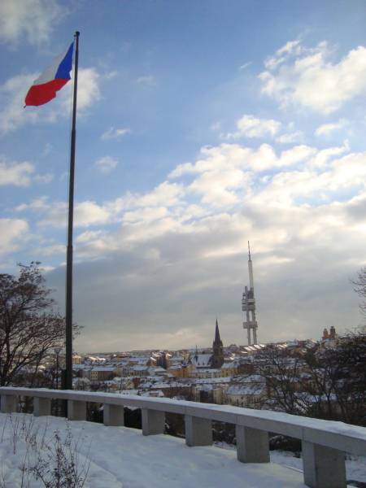
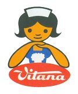
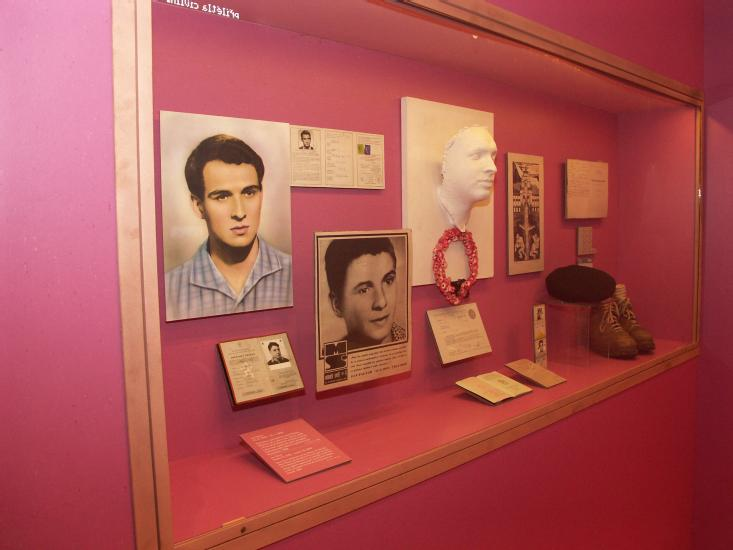
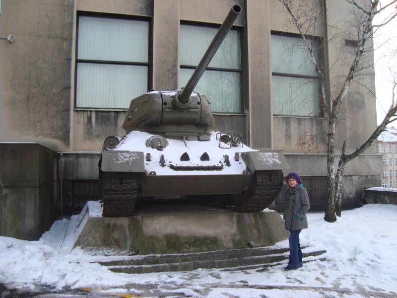

Slíbovala jsem spoustu úžasných zážitků z Prahy, a tak sem jdu zase nějaký sepsat, než to všechno zapomenu. Druhý den mé návštěvy jsme si s Terkou stanovily jako lehce “vzdělávací”, neboť jsme ho celý zaplnily výstavami. Ta úplně první, na kterou jsme se toho dne vydaly, nesla název “Zlatá?šedesátá” s podtitulem “Vzpomínky a realita” a odehrávala se na Vítkově. Musely jsme se tudíž za poznáním vydrápat pěkně na kopec. Stálo to ovšem zato - a to jak výstava, tak nádherný výhled na Žižkov a Prahu vůbec. Sochu Jana Žižky jsme si však bohužel vyfotit nemohly, protože se zrovna opravuje :(.

Na Vítkově…
Hned u kasy jsme zjistily, že na “Zlatá?šedesátá” v kombinaci s “Beatlemánií”, kam jsme se ten den taky hodlaly vydat, jak již víte, dostaneme akční cenu. To nám ten den ale pěkně začínal :-)! Vstupenka platila také na stálou expozici, výstup na střechu (od toho jsme ale byly slečnou u pokladny odrazeny, protože kvůli sněhu to prý v tuto roční dobu není úplně bezpečné) a do mauzolea Klementa Gottwalda.

Jako první jsme se tedy vydaly na výstavu, kvůli které jsme sem původně přišly - také z toho důvodu, že jsme si neprozřetelně odložily kabáty do šatny a expozice Zlatá?šedesátá vypadala jediná jakž takž vytopeně :D…Výstava zachycuje období 60. let 20. století jako významné období českých dějin, kdy došlo v porovnání s 50. léty k uvolnění politické, společenské a kulturní atmosféry a je opravdu vtipně a zajímavě vytvořená. Nejvíc nás na ní ale asi stejně bavilo to, jak jsme postupně objevovaly, co z dobových “novinek” máme ještě dodneška doma a dokonce to i funguje. Já například poznala náš starý domácí fén :D. Terka nakonec vypočítávání vzdala a pravila, že s takovou si může udělat doma vlastní expozici :D…
Krom pomůcek do domáctnosti výstava nabízela také pohled na dobovou módu, bižuterii a doplňky (plastovou kabelku bych klidně nosila ještě dnes, však móda se pořád vrací :D…), bytové zařízení, technické vymoženosti (kotoučový magnetofon bych mohla zapůjčit na Terčinu výstavu :D), sportovní náčiní nebo hračky. Mohly jsme se také podívat, co se tenkrát třeba prodávalo v sámošce nebo kolik si vydělávaly ženy v JZD :D…a také jsme se dočetly něco málo o žhavých spartakiádních nocích 8-)…

Vitana vařila za vás už v 60.letech :-)…
Když nás zlatá šedesátá dostatečně ukolébala, vrhly jsme se na zážitek poněkud temnějšího rázu…vypravily jsme se do Gottwaldova mauzolea… Vzhledem k tomu, že jsme byly v tu chvíli jedinými návštěvníky této části expozice, padla na nás poněkud tísnivá atmosféra. V podzemí ale kupodivu nic moc k vidění nebylo. Krom několika panelů o tom, jak se u nás komunisté dostali k moci, které se nám skutečně nechtělo číst, tu byla jen veliká vykachličkovaná místnost evokující ve mně atmosféru márnice z filmu Spalovač mrtvol 8-)…paní “průvodkyně” nám však sdělila, že se jedná o místnost, ve které bylo tělo starouše Klementa chlazeno a uchováváno v přijatelném stavu. Poté nás upozornila na otvor ve stropě, kterým byl Klement ve “výstavní dny” vytahován nahoru do síně…tedy až do roku 1962, kdy se přes všechny snahy začal rozpadat a už mu nebylo pomoci :D…
Nu, zážitek skutečně zajímavý, ale přecejen nám v téhle podivné kobce nebylo zrovna dvakrát do skoku, a tak jsme se záhy přemístily k poslední části stálé expozice nazvané “Křižovatky české a československé státnosti”. Expozice věnovaná mezníkům české a československé státnosti ukazuje přelomová období celého dvacátého století. Organizátoři výstavy vybrali několik důležitých mezníků: vznik státu v roce 1918, období Mnichova a vzniku protektorátu, obnovení Československa v roce 1945 a komunistický převrat o tři roky později, události roku 1968, pád komunismu a vznik samostatného Česka a Slovenska v roce 1992. Na čtení informačních panelů už nám nezbývalo dost sil, ale ve většině případů se stačilo jen dívat a člověk i tak odcházel s hlubokým zážitkem. Mně osobně nejvíc zaujal například originál Charty 77, skutečná Nobelova cena, kterou získal náš básník Jaroslav Seifert, poslední dopis Milady Horákové z vězení a obzlášť silným zážitkem byla vitrína věnovaná Janu Palachovi, ve které byly vystaveny věci, které měl u sebe ten den, kdy se upálil - index, tramvajenka, stravenky do menzy, učebnice ekonomie, občanský průkaz…

Jan Palach
Byla bych na výstavě vydržela určitě ještě dýl, ale Terce už byla zima, takže jsme dnešní přísun poznání utnuly a vyrazily na šalinu. Venku pěkně přituhlo, a tak jsme byly vůbec rády, že jsme rády, a že jsme se cestou ještě stihly vyfotit u smějícího se tanku (viz. níže) :D…Na závěr snad jen malá apelace - rozhodně nebuďte líní šplhat za poznáním do kopce, Vítkov za tu námahu každopádně stojí :-)!!!

I tanky se umí smát :)…
Díky za článek - teda i s Beatlemánií za oba. Jsem ráda, žes z toho udělala takové pěkné povídání. Já už jsem se zmohla jen na krátký výčet nejzajímavějších zážitků a odkaz na fotky…